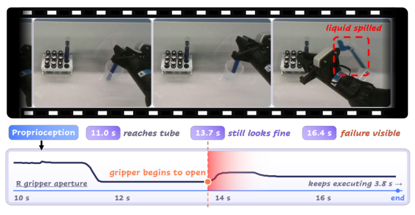
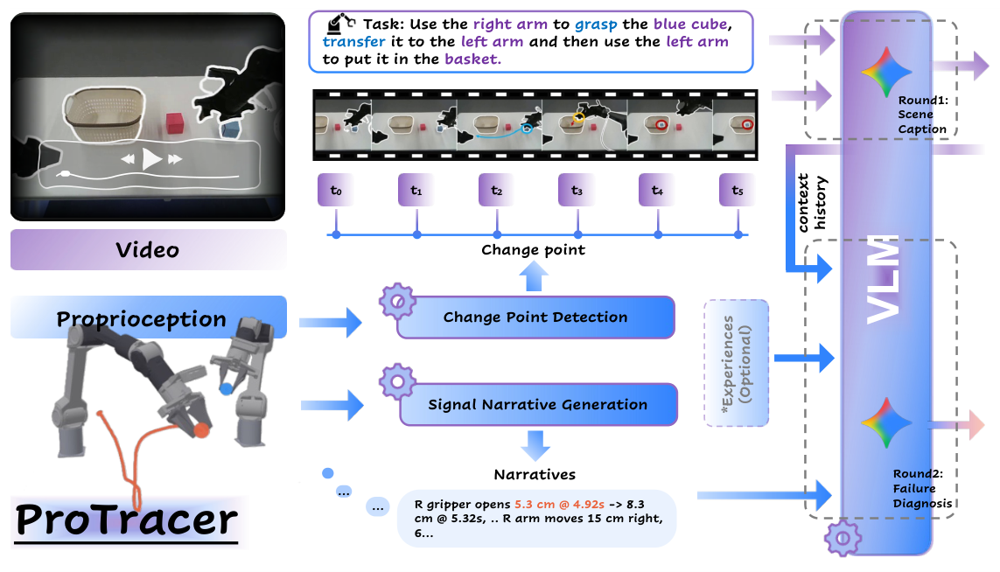
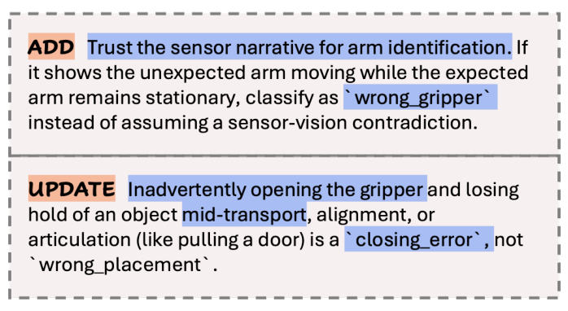
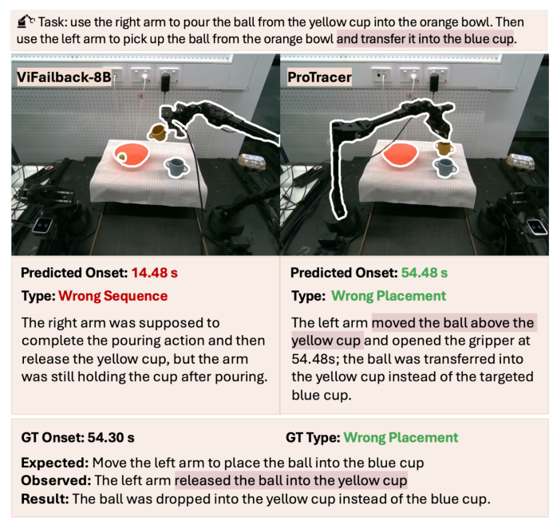
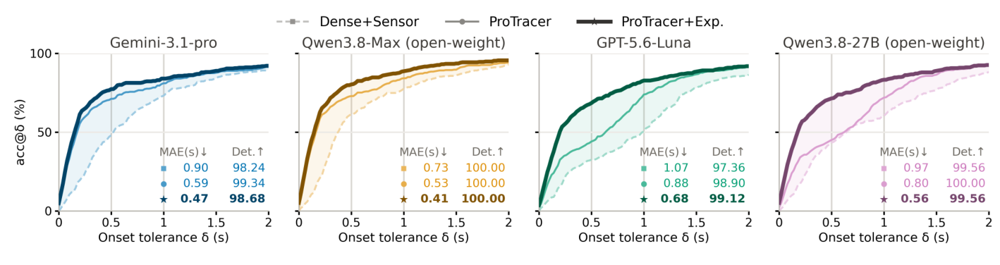

本文提出一个机器人操作失败分析的完整框架，包含二值失败检测、失败分类、解释生成，以及新增的失败起始定位（failure onset localization）能力——识别机器人执行最早偏离有效任务完成轨迹、并最终导致任务失败的时刻。为应对这些任务，作者提出 ProTracer：一个训练无关的框架，把现有 VLM 与本体感受信号结合起来做失败分析。
这一设计把本体感受信号的时间精度与现代 VLM 的多模态推理结合起来，无需额外训练。作者还引入 FailTime 基准（同步视觉 + 本体感受观测），用于评估常规诊断任务与失败起始定位。实验显示 ProTracer 在常规诊断任务与新引入的失败起始定位任务上都取得强性能，凸显了本体感受推理对细粒度时序失败分析的重要性。
失败诊断对机器人学习与部署很重要（支持数据过滤、策略改进、恢复规划、安全分析）。但现有方法聚焦于是否失败、失败是什么类型、解释失败结果，却忽视了失败首次在何时发生。这一区分很重要：操作失败可能在完整 rollout 结束前很久就发生，机器人在最初的失误后还会继续执行许多秒。定位失败起始点能带来更精确的时序信用分配、从失败示范中恢复成功轨迹前缀、以及更细粒度的行为分析。

关键观察：操作失败不纯粹是视觉现象，也反映在机器人执行动力学里。夹爪状态与末端运动提供了时间精确的动作转移线索（仅凭视频难以推断），且这些信号在操作基准与大规模机器人数据集中普遍可用。困难在于 VLM 不会解读密集的原始本体感受数值；而从头训练一个"视觉-语言-机器人状态"多模态大模型又成本过高、标注失败数据稀缺。
每个 episode 含任务指令、一路或多路 RGB 视频流、同步的本体感受信号（夹爪状态、末端位姿）。目标：判断成功/失败，对失败 episode 预测失败类型、解释、避免建议，并定位失败起始时刻。
把执行解释为一系列语义动作阶段（伸向、抓取、抬起、搬运、放置）。起始点是"执行最早偏离有效任务完成轨迹、且此后不再回到成功轨迹"的时刻。三条客观判据：
因为分析是回溯的、完整 episode 可用，后来被纠正的临时错误不算起始（抓取失败后成功重试不算失败起始）。这套规则提供了客观的标注协议，无需穷举所有有效执行策略。

把关节与夹爪状态转成 8D 末端轨迹（3D 位置 + 四元数朝向 + 夹爪开度）。为变点检测，聚焦夹爪动力学与末端运动——操作转移最有信息量的线索。对每只手臂编码两个离散指示符：夹爪开度速度符号 sign(vᵏₜ)∈{−1,0,1} 与去噪末端运动指示 1[mᵏₜ>0]（丢弃幅度，因为原语边界由抓取状态与运动活动的离散切换刻画）。得到符号矩阵 X∈Σ^{T×2K}。
对候选段 [s,e) 定义模态-汉明代价（衡量该段能否被单个稳定符号状态表示）：
用 PELT 检测候选变点，再贪心剪枝弱边界到固定时间预算 B（FailTime-Short B=8，平均保留 6.8 个阶段；FailTime-Long B=39，平均 19.5 个）。保留的边界定义下游证据构造的关键帧与时间区间。
传感器叙事用确定性规则而非学习到的 captioner 生成：零幻觉，且词汇是"本体无关的物理量"（开度、位移、旋转），因此同一套规则能不改动地迁移到不同平台。视觉描述刻画稀疏场景状态，本体感受描述刻画其间的物理转移。
有少量标注校准集时，ProTracer 可不更新权重地适配反复出现的错误模式。对每个校准 episode 先预测、再与真值配对回给 VLM 做反思，生成文本"经验教训"（如常见的起始定位错误、相似类别混淆、视觉-本体感受证据不一致）。这些经验累积成反思记忆、前置到后续推理 prompt。记忆可 ADD / MERGE / UPDATE / COMPRESS。一个候选经验只有在用更新后的记忆重跑对应 episode 能纠正原预测时才被接受。测试时记忆固定、不使用真值标签。

| 组成 | 规模 | 特点 |
|---|---|---|
| FailTime-Short | 1539 episode（含 579 成功） | 基于 ViFailback 基准 + 子集训练数据，平均 12s（最长 37s） |
| FailTime-Long | 100 长时程真实 episode（57 失败 / 43 成功） | 新采集，ALOHA + SO-101 双臂平台，平均 54s（最长 120s） |
共 123 个不同操作任务。把失败分类法从 4 类扩展到 10 类（错误顺序、错误物体、错误夹爪、错误放置、闭合错误、张开错误、平移错误、朝向错误、可避免干预、不可避免干预）。6 名标注者耗时 120+ 小时：失败类别平均两两一致率 0.94，起始标注平均分歧 50ms，99.6% 分歧在 0.5s 内。
| 方法 | 说明 |
|---|---|
| Gemini-3.1-pro | 通用 VLM：1fps 稠密多视视频帧提示 |
| Robotics-ER 1.6 | 机器人数据调优的模型 |
| KITE | 光流关键帧选择的 VLM 失败诊断 |
| ViFailback-8B† | 在 ViFailback 训练集上训练的失败分析模型（非零样本） |
| 各方法带 ∗ 变体 | 额外接收原始本体感受 CSV |
| ProTracer（本文） | 本体感受变点选择 + 结构化叙事 + VLM |
| ProTracer+Exp | 加反思记忆（50 episode 校准集，3 轮反思） |
| 模型 | Onset MAE↓ | Onset @0.5s | Detect | Type |
|---|---|---|---|---|
| ViFailback-8B† | 1.10 | 46.06 | 97.80 | 57.64 |
| KITE | 1.75 | 14.53 | 96.26 | 35.71 |
| Robotics-ER 1.6 | 1.63 | 14.29 | 95.38 | 34.48 |
| Gemini-3.1-pro | 1.32 | 27.83 | 95.82 | 49.51 |
| Gemini-3.1-pro∗（+raw 本体） | 0.90 | 48.03 | 98.24 | 60.34 |
| ProTracer | 0.59 | 71.18 | 99.34 | 72.91 |
| ProTracer+Exp | 0.47 | 77.34 | 98.68 | 77.83 |
所有模型失败检测都超 95%（检测不难），但起始定位准确率差异巨大。仅仅把原始本体感受拼进稠密帧基线（∗ 变体）就把 MAE 从 1.32s 降到 0.90s、acc@0.5s 从 27.83% 提到 48.03%。ProTracer 进一步到 71.18% / 0.59s——本体感受是时序信号的来源，但"怎么用"同样重要：在本体感受变点选关键帧 + 转结构化叙事，把 acc@0.5s 从 48.03% 推到 71.18%。且它零训练就超过了在 ViFailback 上训练的 ViFailback-8B。
所有方法在更长时程上起始定位都退化，但 ProTracer 退化最少，在每个起始与诊断指标上保持最佳。ViFailback-8B 因在分布内（训练于 ViFailback）从 46.06% 跌到 5.26% acc@0.5s，而训练无关的 ProTracer 保持 40.35%（+Exp 45.61%）。Robotics-ER 1.6 因训练含传感器数据退化较少、是最强基线——再次印证本体感受的价值，而 ProTracer 无需训练就把这种价值提供给现成 VLM。

| 变体 | Onset MAE↓ | Onset @0.5s | Detect | Type |
|---|---|---|---|---|
| ProTracer（完整） | 0.59 | 71.18 | 99.34 | 72.91 |
| w/o sensor | 1.18 | 30.79 | 98.24 | 57.39 |
| w/o vision | 1.88 | 23.65 | 90.33 | 15.02 |
去掉传感器：起始定位暴跌（71.18→30.79、MAE 翻倍到 1.18s），但检测仍高、类型只降一点——视觉单独仍支撑语义判断。去掉视觉：类型准确率崩到 15.02%——没有视觉上下文无法判断"物体级发生了什么失败"。结论呼应设计原则：传感器决定"何时看"，视觉-语言推理决定"什么失败了"。
| 选择器 | Onset @0.5s | MAE↓ | Type |
|---|---|---|---|
| 光学流 | 66.50 | 0.73 | 64.78 |
| 连续 CPD | 66.26 | 0.79 | 66.50 |
| Sign-CPD（本文） | 71.18 | 0.59 | 72.91 |
把 ProTracer 里的关键帧选择器换成光流/连续 CPD（其余不变）都差于 Sign-CPD。独立边界对齐实验显示：Sign-CPD 召回 69.68% 的真动作边界（0.5s 容差），光流仅 40.80%、连续 CPD 55.28%——说明原语边界由离散状态切换刻画得最好，而非视觉运动或幅度变化。
| 检测器 | AUROC | Onset MAE↓ | Onset @0.5s |
|---|---|---|---|
| RND-OE | 0.57 | 5.03 | 0.74 |
| FIDeL | 0.60 | 5.27 | 0.25 |
| RynnValue-8B | 0.85 | 2.61 | 1.72 |
| GRU（起始监督） | 0.74 | 2.08 | 18.97 |
| ProTracer（零样本） | — | 0.59 | 71.18 |
三个无标签检测器最多 1.7% acc@0.5s（MAE 2.6–5.3s），即便用了起始标签监督的 GRU 也只有 19.0%。即便给检测器中位数偏移的 oracle 校正，起始准确率仍低于 9%。图 6 显示原因：密度检测器系统性过早、价值模型过晚，且都有 3–4s 的散布。运行时检测与起始定位回答的是不同问题——检测器在因果约束下决定何时停，起始定位从完整记录恢复"哪里出的错"。

本文把失败起始定位作为机器人操作失败诊断的新能力引入，配套发布 FailTime 基准（同步视觉 + 本体感受观测），并提出 ProTracer——训练无关的框架，把视觉与本体感受信号整合进现有 VLM 做多模态失败推理。实验在常规诊断与新任务上都表现强劲，凸显本体感受推理对精确理解机器人失败的重要性。
arXiv:2609.21369 — https://arxiv.org/abs/2609.21369